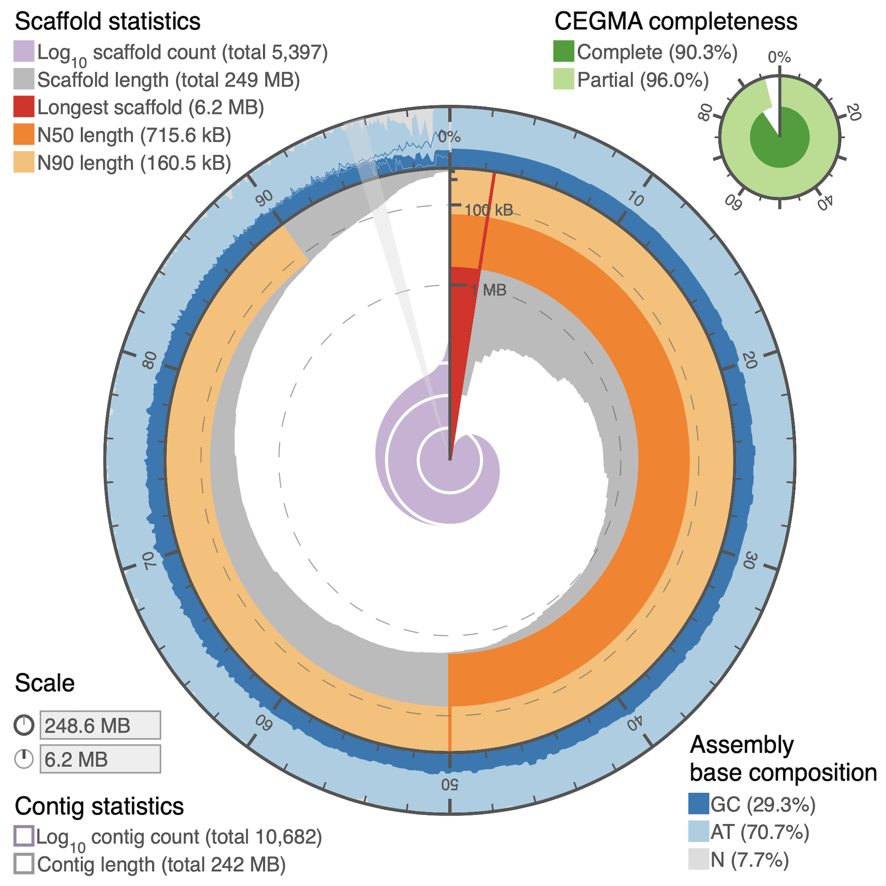
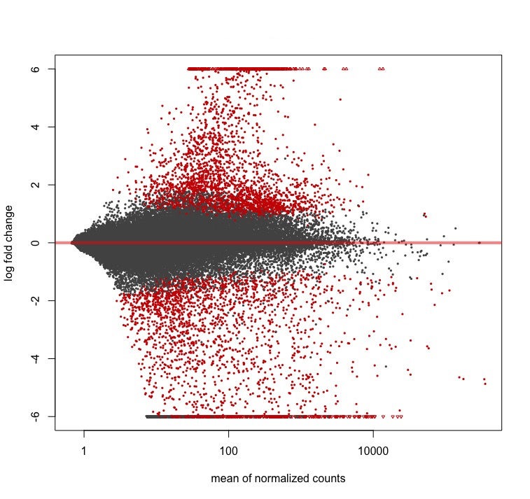
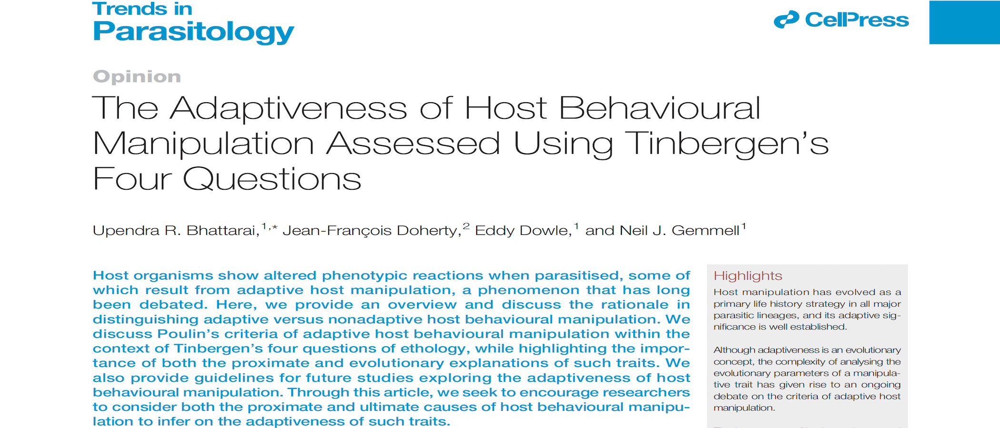
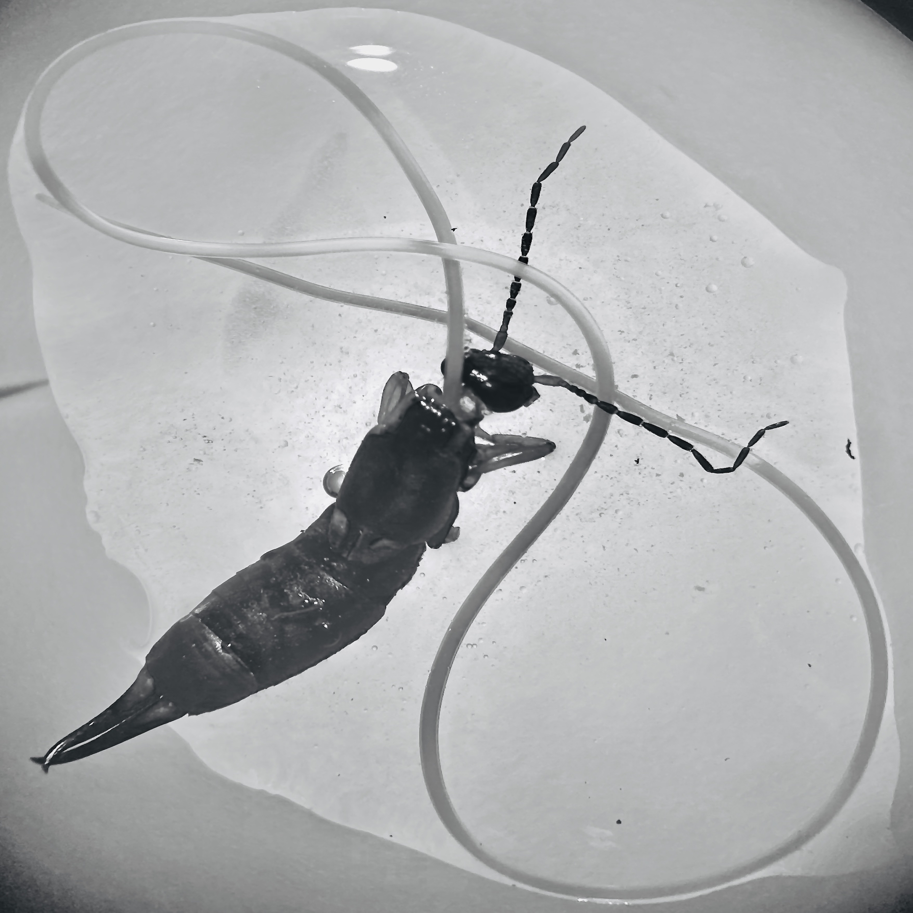

Genomics
De novo genome assembly, annotation, and comparative genomics — leveraging short and long read sequencing (PacBio / Nanopore) to build high-quality references across diverse species.
The methods I keep coming back to — building references, profiling expression, mapping regulation, and asking how parasites rewire their hosts.

De novo genome assembly, annotation, and comparative genomics — leveraging short and long read sequencing (PacBio / Nanopore) to build high-quality references across diverse species.

Bulk and single-cell RNA-seq for differential expression, alternative splicing, and cell-state inference — across temporal and spatial scales.

DNA methylation (WGBS) and chromatin profiling (ChIP-seq, CUT&RUN, accessibility) to decode regulatory programs underlying biological complexity.

Integrative analyses to understand the molecular mechanisms of host behavioural manipulation and the evolutionary dynamics of parasite–host interactions.
The biological questions I bring computational and experimental approaches to — both in current translational neuroscience work and across previous and ongoing collaborations.
Multi-omics integration for neurodegenerative disease research at the Center for Translational Neuroscience — supporting clinical and laboratory teams in turning sequencing data into biologically meaningful insight.
Functional profiling of cell-cycle regulators (e.g., p53 and RB) and mechanism-driven molecular stratification — collaborating on cancer genomics studies that connect phenotype to therapeutic strategy.
Comparative genomics and transcriptomics of emerging model organisms — including chromosome-level assemblies for hemimetabolous insects to study temporal and spatial gene regulation.
Always open to discussing genomics analyses, workflow development, and host–parasite questions.